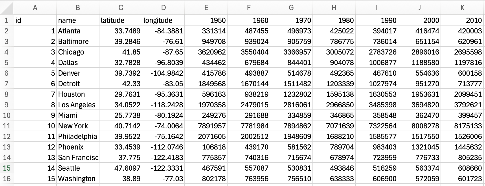
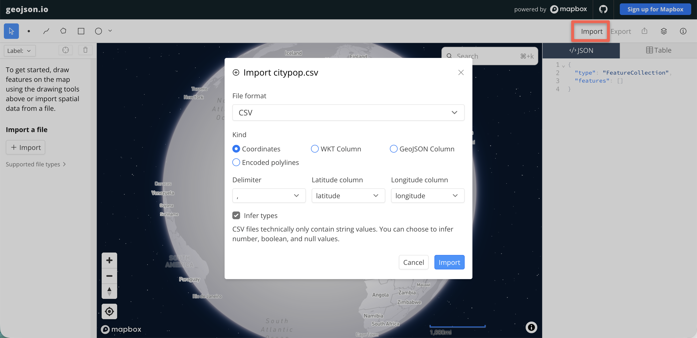
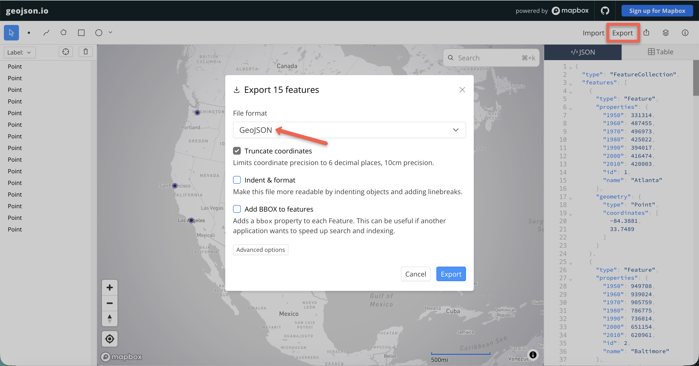

Lab 7. Time Series Proportional Symbols
Due: 11:59 pm, Wednesday, 11/18
Overview
In this lab, we will create a time series proportional symbol map with Leaflet. A time slider and a play button let the map reader move through the years. This lab exercise is modified from this tutorial.
The scripts contain a lot of function definitions and may be difficult to follow if you are trying to understand them line by line. I have provided comments as explanations. However, you may use the scripts as a template to map data with a similar structure. I am always happy to explain in more detail if you are interested in learning the syntax.
Please read the instructions carefully (including the explanations of each step) and complete the assignment in the Deliverables section at the bottom.
*******************************************************************************************************************
Prepare Time Series Data
The first step for the spatiotemporal visualization is to create a time series dataset. As an example, I will map the population dynamics of fifteen major U.S. cities. Below is an example of what the dataset looks like (a .csv file). Each row is a city, and each year is a column:

- Click here to download the example data. Spend some time to make sure you understand the data structure.
- We will use an online platform for turning points with coordinates into GeoJSON. It may come in handy when other GIS processing (e.g., table join, simplify geometry) is not required.
- In your web browser, go to geojson.io, click Import, and select the csv file you have just downloaded.
- In the import window (see image below):
- Import the file as Coordinates.
- Choose , (comma) as the Delimiter.
- Match the coordinate fields: latitude for latitude, and longitude for longitude.
- Click Import.
- The data, i.e., 15 U.S. cities, should be loaded as points/markers on the site.
- Next, click Export, choose GeoJSON as the file format, and click Export to save the geojson file to your lab 7 folder.
- Use your code editor to open the GeoJSON file, and add the variable definition line at the very beginning, as we have been doing. Name the variable data (
var data =), because the code below uses that name:Save the changed GeoJSON asvar data =citypop.jsto your lab 7 folder. Note the file extension is .js.


Proportional Symbol Map
We will map the city population data as proportional symbols. Not sure what a proportional symbol map is? Click here to learn more.
- First, open your code editor and set up the basemap to show the contiguous U.S. in fullscreen mode. Save the document as
map7.htmlto your lab 7 folder, wherecitypop.jsis saved. - In the
headsection, following the Leaflet CSS and JS libraries, include the line below so that we can use the data incitypop.js. Since the file is in the same folder as the map HTML file, we can reference it by its file name alone:<script src="citypop.js"></script> - Next, we define a function to process the data. It finds the timestamps (the year columns) and the maximum and minimum population values, which we will use for the legend.
Add the function below in thescriptsection, AFTER adding the tile layer (you may name the function differently):function processData(data) { // First, initialize the variables to hold the timestamps and min/max population values var timestamps = []; // square brackets to define an array of data // because there are multiple timestamps var min = Infinity; // for the min, begin with the largest possible value - infinity var max = -Infinity; // for the max, begin with the smallest possible value - negative infinity // Go through each row/feature of the data table // Note data is the variable name in the function definition - processData(data) for (var feature in data.features) { var properties = data.features[feature].properties; // At each row, go through the columns/attributes to get the values for (var attribute in properties) { if ( attribute != 'id' && attribute != 'name' && attribute != 'latitude' && attribute != 'longitude' ) // != means NOT EQUAL TO // These columns are NOT timestamps, so they are skipped // Modify this part when mapping your own data { if ( timestamps.indexOf(attribute) === -1 ) { // indexOf() searches an array for a value and returns its position (or -1 if not found) // here, the new timestamp is only added when it is not already in the array // triple equals === compares both type and value timestamps.push(attribute); // The JS push() method adds new items to the end of an array } var value = Number(properties[attribute]); // Number() makes sure the value is a number, not text if (value < min) { min = value; // record/update the current smaller values as the min } if (value > max) { max = value; // record/update the current larger values as the max } } } } return { // the function finally returns the timestamps array, the min and max of population data timestamps : timestamps, min : min, max : max } } - Read the comment lines to learn more about what this function does exactly. It looks like a lot is going on. But when you map your own data, the only places you need to change are the attribute/column names that are NOT supposed to be mapped ('id', 'name', 'latitude', 'longitude' in this case).
- Next, add the functions below to draw proportional symbols (following the processing data portion):
Again, a lot is going on here. But you ONLY need to adjust the popup content (as we did before) and the scale factor (depending on the values and the map scale) for making your own maps. And of course, customize the colors and styles of the circles as you like.
var cities; // the city circles; more than one function uses them, so we define the variable here // The function to draw the proportional symbols function createPropSymbols(timestamps, data) { cities = L.geoJson(data, { // By default, Leaflet draws geojson points as simple markers // To alter this, the pointToLayer function needs to be used pointToLayer: function(feature, latlng) { return L.circleMarker(latlng, { // we use circle marker for the points fillColor: "#501e65", // fill color of the circles color: '#501e65', // border color of the circles weight: 2, // circle line weight in pixels fillOpacity: 0.5 // fill opacity (0-1) }).on({ mouseover: function(e) { this.openPopup(); this.setStyle({fillColor: 'green'}); // fill color turns green when mouseover }, mouseout: function(e) { this.closePopup(); this.setStyle({fillColor: '#501e65'}); // fill turns original color when mouseout } }); } }).addTo(map); updatePropSymbols(timestamps[0]); // this function is defined below // When loaded, the map will first show proportional symbols with the first timestamp's data } // The function to update/resize each circle marker according to a value in the time series function updatePropSymbols(timestamp) { cities.eachLayer(function(layer) { // eachLayer() is a Leaflet function to go through the layers/points of the map one by one var props = layer.feature.properties; // attributes var radius = calcPropRadius(Number(props[timestamp])); // circle radius, calculation function defined below // pop-up information (when mouseover) for each city is also defined here // toLocaleString() adds commas to the number, for example 3620962 becomes 3,620,962 var popupContent = props.name + ' ' + timestamp + ' population: ' + Number(props[timestamp]).toLocaleString(); layer.setRadius(radius); // Leaflet method for setting the radius of a circle layer.bindPopup(popupContent, { offset: new L.Point(0,-radius) }); // bind the popup content, with an offset }); } // calculate the radius of the proportional symbols based on area function calcPropRadius(attributeValue) { var scaleFactor = 0.001; // the scale factor is used to scale the values; the radius of a circle marker is in pixels // you may determine the scale factor accordingly based on the range of the values and the mapping scale var area = attributeValue * scaleFactor; return Math.sqrt(area/Math.PI); // the function returns the radius of the circle to be used in the updatePropSymbols() } - So far, we have only defined the functions. A function does nothing until it is called (run). Add the lines below right AFTER the tile layer, ABOVE the functions. It is fine in JavaScript to call a function that is defined further down in the script:
// Run the functions defined below, in this order var info = processData(data); // data is the variable defined in citypop.js createPropSymbols(info.timestamps, data); - Your map should display proportional symbols with the first timestamp's data at this point (sample code):
Add a Time Slider
Now we will add the time slider, with a year label, to move through the temporal data. For this lab, we will use the HTML5 range type to create a simple slider.
- Add the functions below AFTER the drawing symbol portion:
var slider; // the slider; more than one function uses it, so we define the variable here function createSliderUI(timestamps) { var sliderControl = L.control({ position: 'bottomleft' }); // position of the slider // Another use of L.control :) sliderControl.onAdd = function(map) { // a box (div) to hold the slider and the year label var container = L.DomUtil.create("div", "time-control"); // the slider, an HTML range input slider = L.DomUtil.create("input", "range-slider", container); slider.type = "range"; slider.min = 0; // position 0 is the first timestamp slider.max = timestamps.length - 1; // the last position is the last timestamp slider.step = 1; // the slider moves one timestamp at a time slider.value = 0; // start at the first timestamp slider.setAttribute("aria-label", "Year"); // the name a screen reader reads aloud // the year label, shown to the right of the slider var label = L.DomUtil.create("output", "temporal-legend", container); label.textContent = timestamps[0]; // when the slider moves, show the timestamp at the new position slider.addEventListener("input", function() { showTimestamp(timestamps[slider.value]); }); return container; }; sliderControl.addTo(map); } // Show one timestamp: resize the circles and update the year label function showTimestamp(timestamp) { updatePropSymbols(timestamp); document.querySelector(".temporal-legend").textContent = timestamp; } - You do not need to change this function for your own data. The slider gets the timestamps from
processData(), so it works for any number of years. It also works when the years are not evenly spaced (for example, 2000, 2010, 2020, 2023). - Next, we will define the style of the slider box. Add the lines below in the
stylesection of theheadsection:.time-control { display: flex; /* place the items in the box in one row */ align-items: center; gap: 8px; /* space between the items */ padding: 6px 15px; font: 14px/16px Arial, Helvetica, sans-serif; background: rgba(255,255,255,0.8); box-shadow: 0 0 15px rgba(0,0,0,0.2); border-radius: 5px; } .temporal-legend { font-weight: bold; } - Then, add one line to the function calls below the tile layer, to create the slider:
// Run the functions defined below, in this order var info = processData(data); // data is the variable defined in citypop.js createPropSymbols(info.timestamps, data); createSliderUI(info.timestamps); - Test your map. Save, refresh the browser, and drag the slider handle. Does anything else move?
- The whole map moves along with the handle. The mouse action on the slider also reaches the map underneath it, so the map is dragged too. To fix this, add the line below in
createSliderUI(), right AFTER the line that creates the box (var container = ...):Save and refresh. Now the slider moves, and the map stays still.L.DomEvent.disableClickPropagation(container); // clicks and drags on the box stay on the box and do not move the map - The slider is added to the map, at your defined position (I used bottom left) (sample code):
Add a Play Button
A slider lets the map reader stop at one year and compare. An animation shows the overall trend without any effort from the reader. A play button gives the reader both: they can watch the change, and pause it at any year.
- Add the function below AFTER the time slider functions:
function createPlayButton(timestamps) { var speed = 1000; // time between steps in milliseconds (1000 = 1 second) // use a smaller number to play faster var timer = null; // holds the running animation; null means it is not playing // create the button and place it in the slider box, in front of the slider var button = L.DomUtil.create("button", "play-button"); button.textContent = "Play"; document.querySelector(".time-control").prepend(button); // what happens when the button is clicked button.addEventListener("click", function() { if (timer !== null) { // if the animation is playing, pause it stopPlaying(); return; } if (Number(slider.value) === timestamps.length - 1) { // at the last timestamp, start over slider.value = 0; showTimestamp(timestamps[0]); } button.textContent = "Pause"; // setInterval() runs the function inside it again and again, once every [speed] milliseconds timer = setInterval(function() { var next = Number(slider.value) + 1; // the next position on the slider slider.value = next; showTimestamp(timestamps[next]); if (next === timestamps.length - 1) { // stop at the last timestamp stopPlaying(); } }, speed); }); function stopPlaying() { clearInterval(timer); // clearInterval() stops the animation timer = null; button.textContent = "Play"; } } - The only place you may want to change is the speed. For example,
500moves to the next year every half second. - Add the lines below in the
stylesection to style the button:.play-button { font: inherit; padding: 4px 12px; cursor: pointer; } - Then, add one line to the function calls to create the button. It must come AFTER
createSliderUI(), because the button is placed inside the slider box:// Run the functions defined below, in this order var info = processData(data); // data is the variable defined in citypop.js createPropSymbols(info.timestamps, data); createSliderUI(info.timestamps); createPlayButton(info.timestamps); - Test your map. Click Play. The map should step through the years and stop at the last year. Click Pause to stop it. Click Play at the last year to start over.
- We use a real HTML
button, so the map reader can also use it with the keyboard: press Tab to reach the button, then press Enter. The slider works with the arrow keys, too. Try it! (sample code)
Add a Legend
We are almost there! The last step is to add a legend for the proportional symbols.
- Add the
createLegend()function BELOW the play button function. The function creates a legend with three circle sizes: the minimum value, half of the range, and the maximum value. The values are rounded to two significant digits, so they are easy to read.function createLegend(min, max) { if (min < 10) { min = 10; } // round a number to two significant digits, for example 8175133 becomes 8200000 function roundNumber(inNumber) { var unit = Math.pow(10, Math.floor(Math.log10(inNumber)) - 1); return Math.round(inNumber / unit) * unit; } var legend = L.control( { position: 'bottomright'} ); legend.onAdd = function(map) { var legendContainer = L.DomUtil.create("div", "legend"); L.DomEvent.disableClickPropagation(legendContainer); // the legend title; change it to describe your data legendContainer.innerHTML = "<h2 id='legendTitle'>Total Population</h2>"; var symbolsContainer = L.DomUtil.create("div", "symbolsContainer", legendContainer); var classes = [roundNumber(min), roundNumber((max-min)/2), roundNumber(max)]; // three example values var lastRadius = 0; for (var i = 0; i < classes.length; i++) { var legendCircle = L.DomUtil.create("div", "legendCircle", symbolsContainer); var currentRadius = calcPropRadius(classes[i]); // the same radius function as the map circles var margin = -currentRadius - lastRadius - 5; legendCircle.style.width = currentRadius*2 + "px"; legendCircle.style.height = currentRadius*2 + "px"; legendCircle.style.marginLeft = margin + "px"; legendCircle.innerHTML = "<span class='legendValue'>" + classes[i].toLocaleString() + "</span>"; lastRadius = currentRadius; } return legendContainer; }; legend.addTo(map); } - Change the legend title to describe your data. The legend circles use the same
calcPropRadius()function as the map circles, so the sizes always match. - Next, we will define the styles of the legend. Add the lines below in the
stylesection of theheadsection. The.legendCirclecolors should match the circle colors on your map:.legend { padding: 6px 15px; font: 14px/16px Arial, Helvetica, sans-serif; background: rgba(255,255,255,0.8); box-shadow: 0 0 15px rgba(0,0,0,0.2); border-radius: 5px; } #legendTitle { text-align: center; margin-bottom: 15px; font-variant: small-caps; } .symbolsContainer { float: left; margin-left: 50px; } .legendCircle { border-radius: 50%; border: 2px solid #501e65; background: rgba(80, 30, 101, .5); display: inline-block; } .legendValue { position: absolute; right: 8px; } - Then, add one line to the function calls to create the legend:
// Run the functions defined below, in this order var info = processData(data); // data is the variable defined in citypop.js createPropSymbols(info.timestamps, data); createSliderUI(info.timestamps); createPlayButton(info.timestamps); createLegend(info.min, info.max); - Here is the final map! (sample code)
Deliverables
For the deliverables, we use the same city data and add one more census year. You will create:
- A time series proportional symbol map of the same 15 cities, from 1950 to 2020. Look up the 2020 population of each city in Census QuickFacts. Use the row Population, Census, April 1, 2020.
- To add the 2020 data, open
citypop.csvin Excel or Google Sheets. Add a new column named2020after the 2010 column, and enter the 2020 population of each city. Type the numbers without commas (for example,2746388, not2,746,388). - Save the table as a csv file again:
- Excel: select File > Save As, and choose CSV UTF-8 (Comma delimited) (*.csv) as the file type.
- Google Sheets: select File > Download > Comma Separated Values (.csv).
var data =steps to create a newcitypop.js. - Change the circle colors to colors of your choice, and make the legend circles match the map circles.
- Check your map: drag the slider to the end. The label should show 2020, and all 15 circles should appear. If a circle disappears, check that city's 2020 value in
citypop.csv. A comma inside the number or a missing value is the usual cause. - Host your map via GitHub (Make sure to rename the html file as
index.htmland upload any associated data files to the repository!!!) and submit the url through D2L.
Rubric
Your map is graded out of 50 points.
| Criteria | What full credit looks like | Points |
|---|---|---|
| 2020 data | The map includes 2020. The 2020 values for all 15 cities match the 2020 Census, and the data loads in the map as citypop.js. | 15 |
| Proportional symbols | The circles are sized by population and are easy to read at the starting zoom level. The popup shows the city name, the year, and the population. | 5 |
| Time slider and play button | The slider moves from 1950 to 2020, and the label shows the year. Play steps through every year and stops at 2020. Pause stops the animation. Dragging the slider does not move the map. | 10 |
| Colors and legend | The circle colors are changed from the sample. The legend circles match the map circles, and the legend title names what the map shows. | 10 |
| Map design | The map opens on the contiguous U.S. The slider box and the legend do not cover any city. | 5 |
| Publishing | The GitHub Pages URL works. The file is named index.html, and citypop.js is uploaded to the repository. | 5 |
| Total | 50 | |
Extra Credit (up to 5 bonus points)
This part is optional. Finish the required map first.
- Map a different time series of your choice, for example data you plan to use for your final project. You need a .csv file with a latitude and longitude column and one column for each time.
- Change the column names in
processData(), the popup content, the scale factor, and the legend title to fit your data. Publish it as a second map in the same repository, and include its URL in the D2L submission comments.